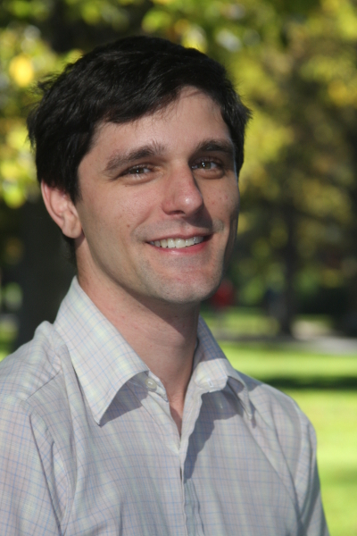

Who am I?

I earned a Ph.D. from the University of Colorado, graduated in December 2015.
Education
- 2010--2015 Ph.D. Computer Science, University of Colorado
- 2008--2010 M.S. Computer Science, University of Colorado
- 2004--2007 B.S. Computer Science, University of Texas at Austin
Ph.D. Thesis
DSLs and Search for Linear Algebra Performance
Advisor: Elizabeth Jessup
I designed search algorithms and ran performance testing for two domain-specific languages, in the domains of matrix and tensor algebra. These languages allow the user to specify high-level mathematical kernels, and the search algorithms automatically test many code transformations and optimizations, searching for best performance on CPUs and GPUs.
Master's Thesis
Genetic Algorithms with Chaotic Population Dynamics
Advisor: Elizabeth Bradley
I created a genetic algorithm with a population that could grow and shrink periodically or chaotically. I then evaluated the algorithm's performance under fixed, periodic, and chaotic populations in solving optimization problems.
Work Experience
- 2010-2015: Research Assistant, Argonne National Labs
- 2008: Software Developer, Alliance Tech, Austin, Texas
Publications
- Thomas Nelson, Axel Rivera, Mary Hall, Paul Hovland, Elizabeth Jessup, Boyana Norris, Prasanna Balaprakash. Generating Efficient Tensor Contractions for GPUs International Conference on Parallel Processing, 2015.
- Thomas Nelson, Geoffrey Belter, Jeremy Siek, Elizabeth Jessup, Boyana Norris. Reliable Generation of High-Performance Matrix Algebra. ACM Transactions on Mathematical Software, 41(3), 2015.
Posters and Talks
Thomas Nelson, Geoffrey Belter, Jeremy Siek, Boyana Norris, Elizabeth Jessup. Search Strategies for Empirical Autotuning in Linear Algebra. Presentation, SIAM CSE 2013.
Xing Jie Zhong, Thomas Nelson, Elizabeth Jessup, Jeremy Siek. Population Size Effects in Genetic Algorithms for Auto Tuning Technical Poster, SIAM CSE 2013.
Christopher Gropp, Geoffrey Belter, Elizabeth Jessup, Thomas Nelson, Boyana Norris, Jeremy Siek. Build-to-Order Linear Algebra Kernels Technical Poster, Supercomputing, 2012.
Geoff Belter, Elizabeth Jessup, Ian Karlin, Thomas Nelson, Boyana Norris, Jeremy Siek. Exploring the optimization space for build to order matrix algebra Technical Report ANL/MCS-P1890-0511, Argonne National Laboratory, May 2011.
Email: thomasharrisonnelson@gmail.com
github: nelsonth